Üdv a súgóban!
Új projekt készítése
Egy új projekt készítéséhez ki kell választani a Fájl menüpontot és és kiválasztani a megfelelő automatát.
Véges Determinisztikus Automata készítése
VDA készítése közben létrehozhat üres, vagy reguláris kifejezésből előállított automata is.
- Üres automata: Tartalom nélküli automata készítése
-
Automata reguláris kifejezésből: Automata reguláis kifejezésből vaóelőállítása.
A reguláris kifejezéshez az alábbi karakterek használhatóak: *, ( , ) és sima karakterek.
Új Veremautomata készítése
Veremautomata készítésekor csak üres automata hozható létre, azonban egy kezdő szimbólumot is meg kell adni.
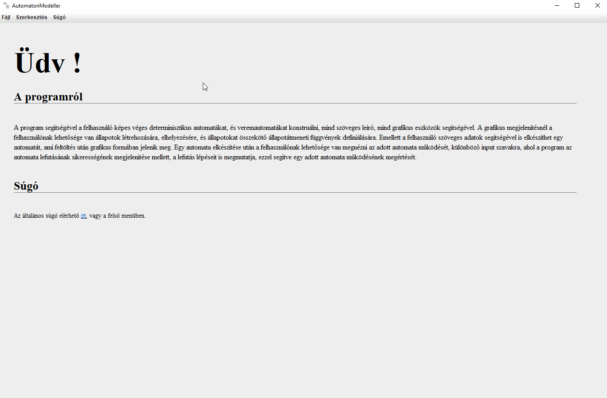
Létező projekt megnyitásat
Egy projekt megnyitása a Fájl menüből az adott típusú automatára való kiválasztással érhető el.
Véges Determinisztikus Automata megnyitása
A DFA megnyitása menüpont kiválasztása után a fájl tallózásával érhető el.
Fájl formátuma:
#AutomatonController-Model
type : DFA
states : [
{"name":"<név>","x":<x koordináta>,y:<y koordináta>,"accceptState":<elfogadó állapot-e>,"startState:"<kezdőállapot-e>},
...
]
transitons : [
{ <kezdő állapot> ---------<átmeneti karakter>---------> <vég állapot> },
...
]
Adattagok jelentése
- type: Az automata típusa (VDA ebben az esetben, úgyhogy DFA)
- states: Az állapotok listája, vesszővel elválasztva
- transitons: Az átmenetek listája, vesszővel elválasztva
Tag-ek jelentése
- név: Az állapot neve
- x koordináta: Az állapot x koordinátája
- y koordináta: Az állapot y koordinátája
- elfogadó állapot-e: Az állapot elfogadóállapot-e
- kezdőállapot-e: Az állapot kezdőállapot-e
- kezdő állapot: Az átmenet kezdő állapotának neve
- átmeneti karakter: Az átmeneti karakter
- vég állapot: Az átmenet vég állapotának neve
Open a Pushdown Automaton
Select Open PDA and found your own file.
File format:
#AutomatonModeller-Model
type : PDA
startSymbol :
states : [
{"name":"<név>","x":<x koordináta>,y:<y koordináta>,"accceptState":<elfogadó állapot-e>,"startState:"<kezdőállapot-e>},
...
]
transitions : [
{ <kezdő állapot> ---------<átmeneti karakter> / <veremből kiveendő karakter>---------> <vég állapot> / [<verembe beteendő karakterek>] },
...
]
Adattagok jelentése
- type: The type of the automaton (DFA in this case)
- states: The list of states in the automaton, separated by commas
- transitons: The list of transitions in the automaton, separated by commas
Tag-ek jelentése
- név: Az állapot neve
- x koordináta: Az állapot x koordinátája
- y koordináta: Az állapot y koordinátája
- elfogadó állapot-e: Az állapot elfogadóállapot-e
- kezdőállapot-e: Az állapot kezdőállapot-e
- kezdő állapot: Az átmenet kezdő állapotának neve
- átmeneti karakter: Az átmeneti karakter
- veremből kiveendő karakter: A karakter, melyet ki kell venni a veremből olvasás előtt
- vég állapot: Az átmenet vég állapotának neve
- verembe beteendő karakterek: A karaktersorozat, melyet be kell rakni a verembe az olvasás után
Állapotok használata
Ez a fejezet arról szól, hogy hogyan használhatóak az állapotok
Állapotok típusai
Sima állapot
A sima állapot csak névvel rendelkezik
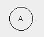
Elfogadó állapot
Az elfogadóállapot rendelkezik egy névvel. Ha az olvasás itt ér véget, elfogadja az olvasott szót.
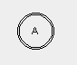
Kezdő állapot
A kezdő állapot rendelkezik egy névvel.Minden olvasás innen kezdődik
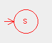
Új állapot készítése
Egy új állapot készítéséhez a jobb-klikk segítségével előugró menüből érhetőel, a megfelelő típust kiválasztva.
Sima állapot
Elfogadó állapot
Kezdő állapot
Állapotok törlése
Az állapotok törlése a jobb-klikkel felugró ablak Állapot törlése menüpontjával érhető el
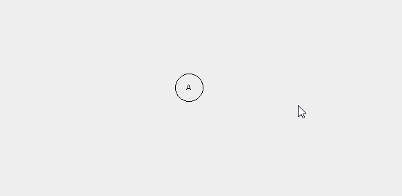
Egy állapot típusának átváltoztatása
Egy állapot típusa átváltoztatható elfogadó és/vagy kezdőállapottá. Elfogadó állapotból bármennyi lehet, azonban kezdőállapotból csak egy.
Elfogadó állapottá tevés
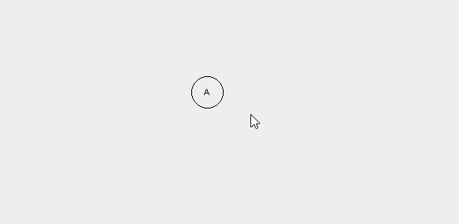
Kezdőállapottá tevés
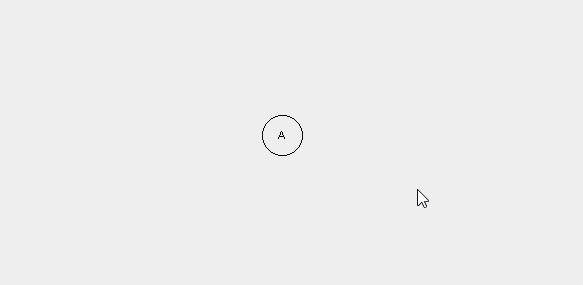
Második kezdőállapot
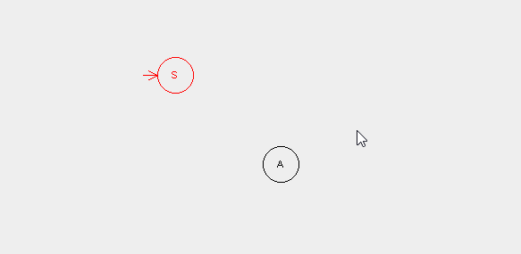
Átmenetek készítése
Az átmenetek készítése a jobb-klikkre felugró menüből érhető el. Két típusú állapotátmenet van, az automata/projekt típusától függően.
Átmenetek Véges Determinisztikus Automatákhoz
VDA átmenet készítéséhez egy állapotra való jobb klikk után az Állapot hozzáadása menüpontot kell választani. Ezután egy állapotra való kattintás után megtörténik az átmenet végállapotának kiválasztása. A felugró ablakban meg kell adni az átmeneti karaktert, majd el is készül az átmenet.
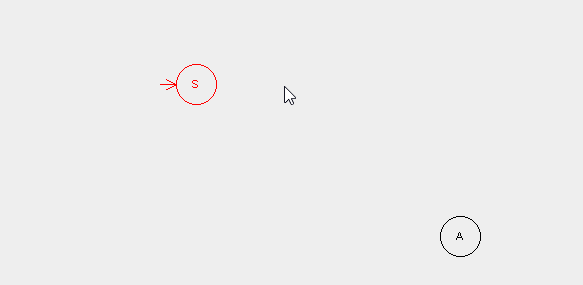
Átmenetek Veremautomatákhoz
Veremautomata átmenet készítéséhez egy állapotra való jobb klikk után az Állapot hozzáadása menüpontot kell választani. Ezután egy állapotra való kattintás után megtörténik az átmenet végállapotának kiválasztása. A felugró ablakban meg kell adni az átmeneti karaktert, a veremből kiveendő karakter, és a verembe beteendő karaktereket, majd el is készül az átmenet.
Megfelelő szintaxis
[átmeneti karakter]/[veremből kiveendő karakter]->[verembe beteendő karakterek]
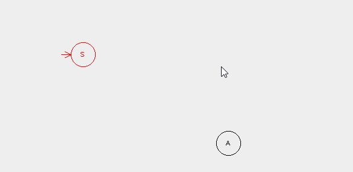
Input szavak olvasása
Az program segítségével input szavak olvashatók az automatákon, és megnézhető, hogy az adott szó elfogadja, vagy elutasítja az automata. Ehhez az irányító panel használható a program bal oldalán.
Új szó hozzáadása
Egy új szó hozzáadásához az Új szó hozzáadása gombot kell lenyomni, majd beírni a kívánt szót.
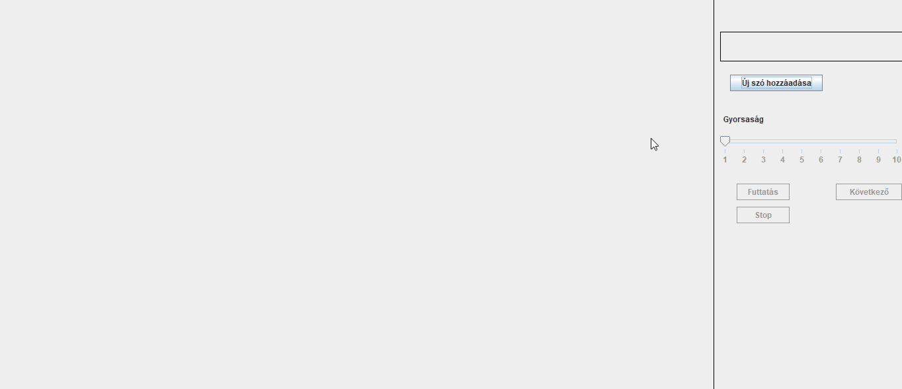
Egy karakter olvasása
Egy karakter olvasásához a Következő gombot kell lenyomni. Egz elolvassa a következő karakter, és átmozgatja az automatát az olvasás utáni állapotnak megfelelően.
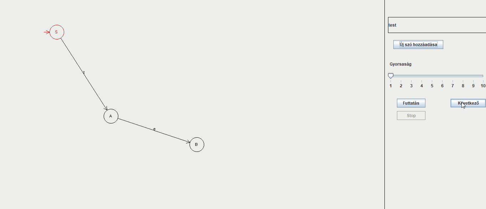
Teljes szó olvasása
Egy teljes szó olvassása a Futtatás gomb segítségével érhető el.Ez végigmegy az összes betűn és a Következő gomb ulajdonságának megflelő eseményt hajt végre. Az utolsó karakter olvasása után a program eldönti, hogy az adott szó elfogadott-e vagy sem.
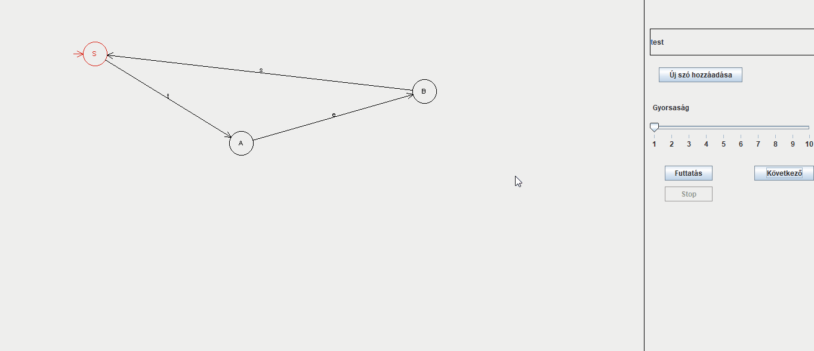
Az olvasás sebessége változtatható a csúszka segítségével.
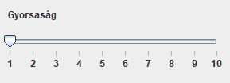
Az olvasás leállítása
Az olvasás a Stop gomb segítségével állítható meg.
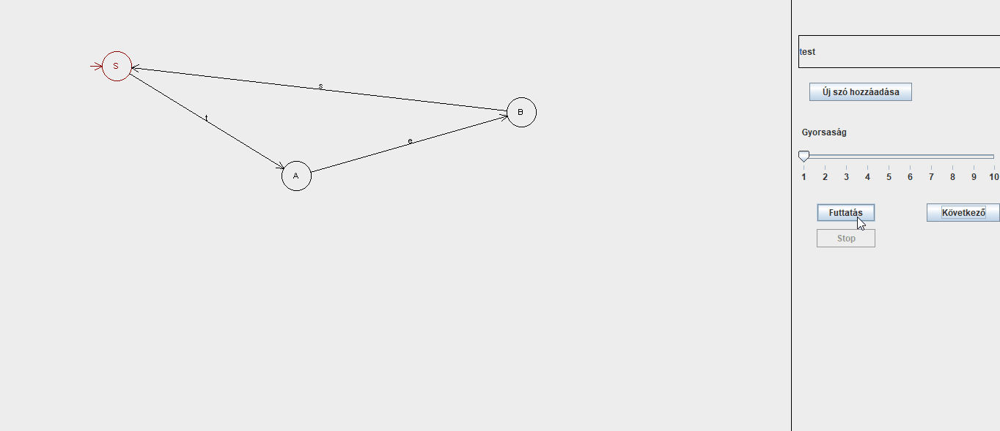
Lépésenkéni olvasás Veremautomaták esetén
A lépésenkénti olvasás beállítható a Lépésenként címke mellet elhelyezkedő bepipálható elem bepipálásával.
Ez azt jelenti, hogy azolvasás három részre osztóik:
- POP: A legfelső elem kivétele a veremből.
- READ:A következő karakter elolvasása, és az automata mozgatása
- PUSH: A megadott elemek behelyezése a verembe.
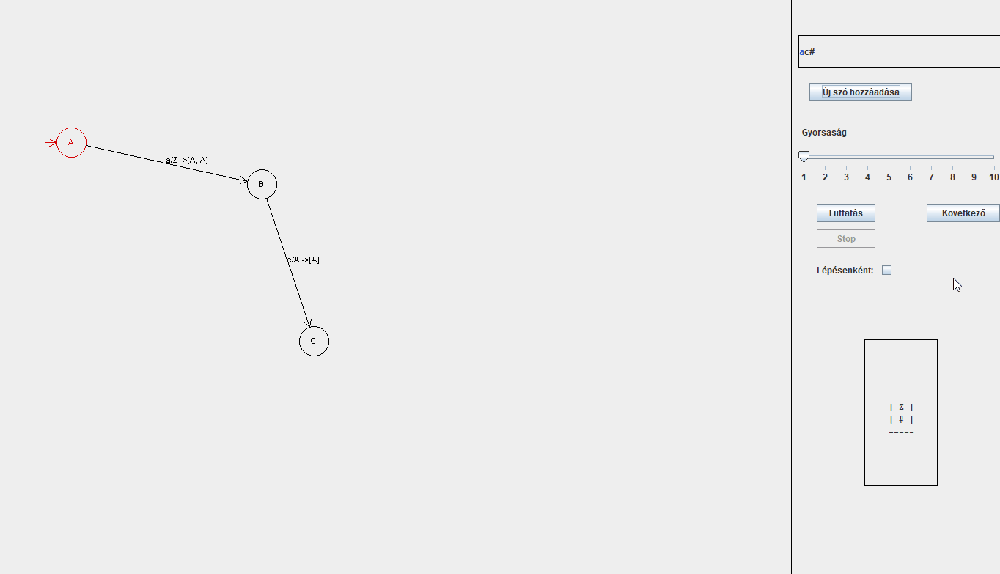